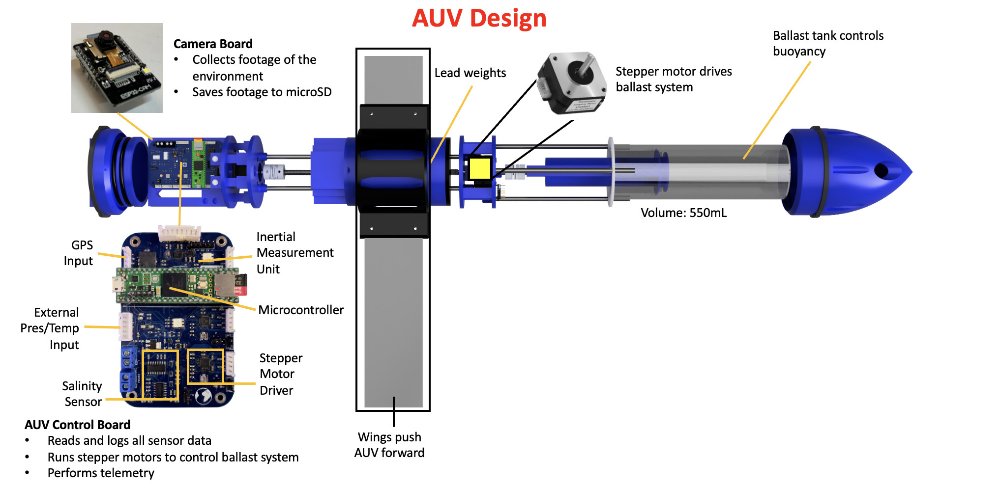
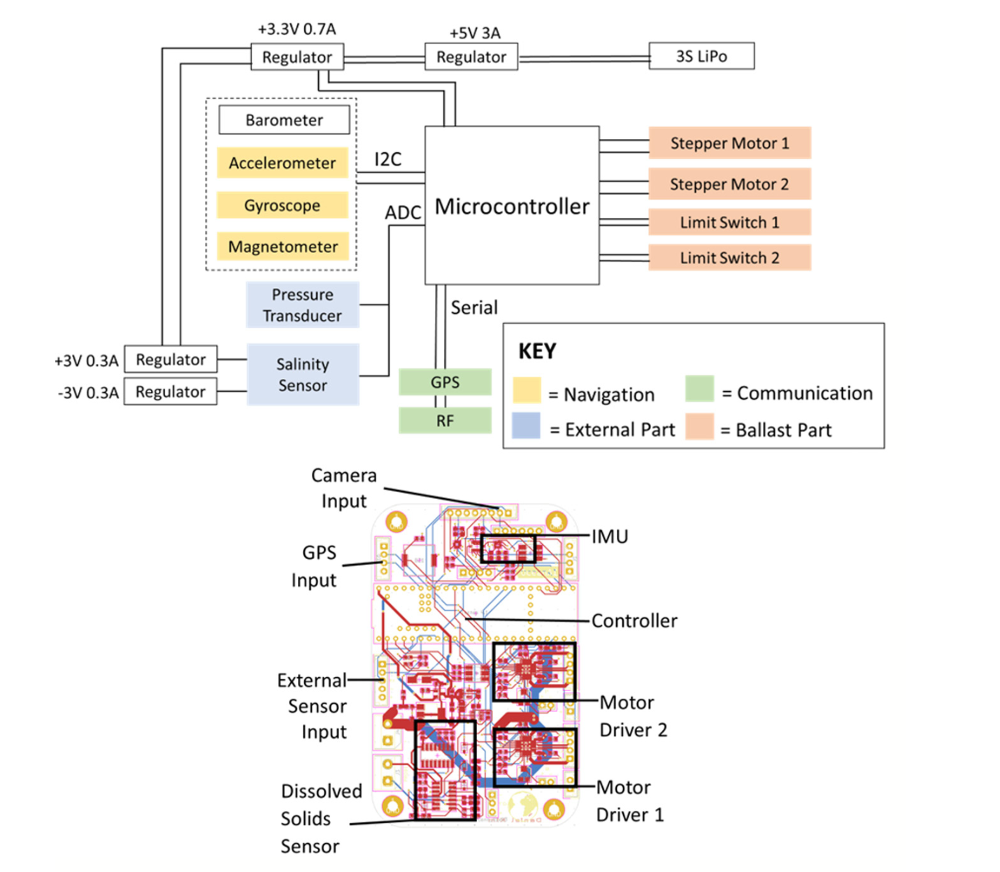
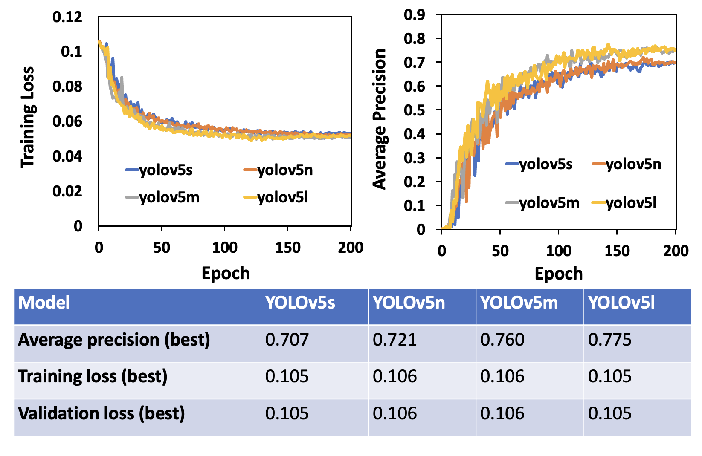

Engineered Underwater Vehicle for Ocean Litter Mapping
Daniel Kim • Los Alamos High School
Abstract
This project explores the possibilities of pairing an autonomous underwater vehicle (AUV) with a deep-learning computer vision model for marine debris mapping. A cost-effective, 3D-printed AUV with a motorized ballast system was designed to collect underwater footage continuously at various depths. A trash detection machine learning model was developed to analyze the footage, yielding five areas of highly concentrated ocean debris at depths of 500-800 m below the surface.
System Overview

The AUV operates as an underwater glider, utilizing a motorized ballast tank to control buoyancy. By manipulating its weight, the vehicle sinks and floats, creating lift on its wings to propel forward without traditional propellers, allowing for long-duration independent operation.

Vision System
A YOLOv5l (Large) convolutional neural network was trained on the Trash ICRA-19 dataset containing 5,700 annotated images. The model achieved the highest mean Average Precision (mAP) of 0.774 among tested architectures, allowing it to effectively identify marine debris in complex underwater environments.
Hardware & Control
The vehicle is powered by a Teensy® 4.1 microcontroller (600 MHz) managing a custom PCB with sensors for pressure, temperature, and TDS. A stepper-motor driven syringe acts as the variable ballast system, offering precise buoyancy control.

Results
- Identified 174,734 litter objects at depths of 500–800m using open-source submersible footage.
- Achieved 80% precision with the YOLOv5l model at a confidence threshold of 0.4.
- Validated mechanical viability through Hardware-in-the-Loop (HIL) simulation.
- Successfully demonstrated buoyancy control and high-frequency data logging (5400 Hz) in field tests.

Cite this Project
title={Engineered Underwater Vehicle for Ocean Litter Mapping},
author={Kim, Daniel},
journal={New Mexico Journal of Science},
volume={57},
pages={1--17},
year={2023}
}